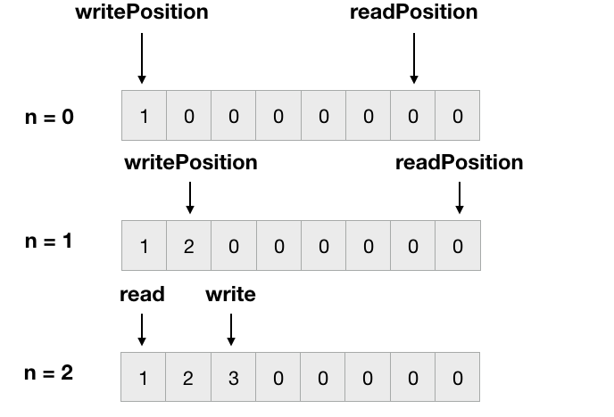
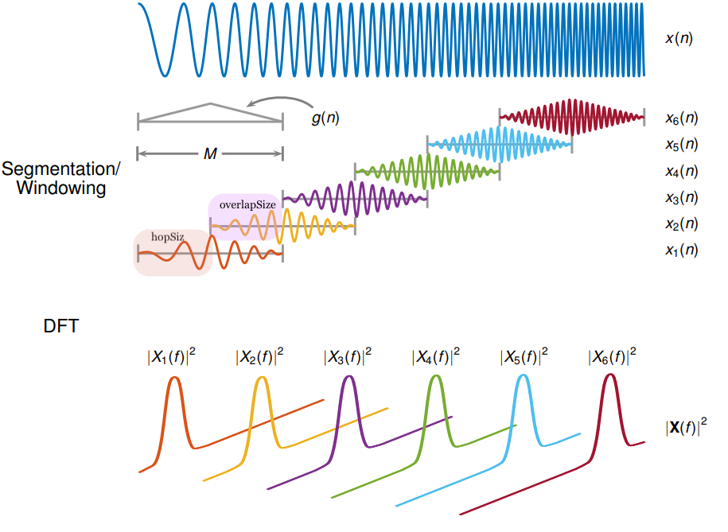
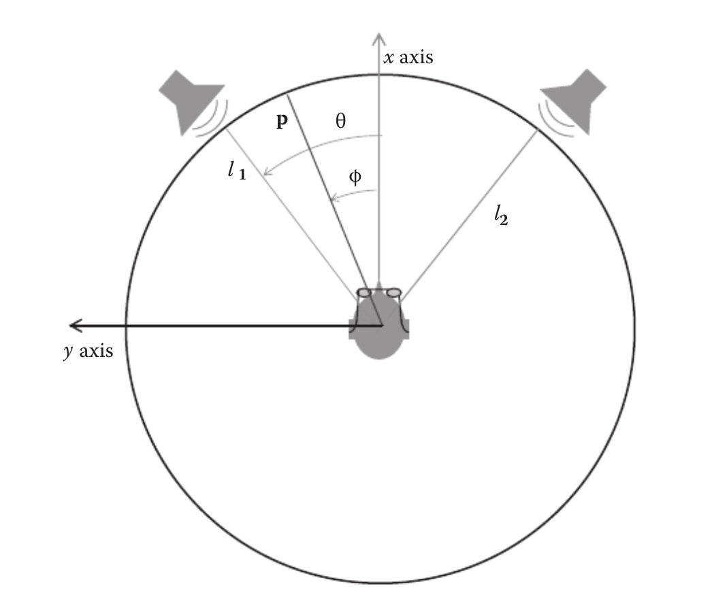

Based on Music 424: Signal Processing for Audio Digital Effect, theories, design are taught for various Audio Effects used in DAWs : Compressor, Delay and Delay based effects, Modulation, Wah-Wah, distortion and Equalizer etc. The contents below show the implementation of selected audio plugins by using JUCE framework.
Ring Modulation
The Ring Modulation is where the audio modulator signal,\(x(n)\) is multiplied by a sine wave,\(m(n)\), with a carrier frequency,\(f_c\), so the equation can be written as below:
\[y[n] = x[n]\cdot m[n] = x[n]\cdot \sin(2\pi f_c n/N)\]
In order to control the depth of the ring modulation, we can have the parameter "Depth":
\[y[n] = x[n]\cdot ((1 - d) + d\cdot m[n])\]
In the JUCE implementation
Tremelo
The Tremelo effect is similar to the Ring modulation but the carrier signal is a LFO above the x axis, thus, we can make our sine signal as \[m[n] = 0.5 + 0.5\sin(2\pi n/N)\]
⭐️Implementing a lfo
In juce, we can write a lfo in AudioProcessor class as below:
float AudioProcessor::LFO (float phase, int waveform)
{
float out = 0.0f;
switch (waveform) {
case waveformSine: {
out = 0.5f + 0.5f * sinf (twoPi * phase);
break;
}
case waveformTriangle: {
if (phase < 0.25f)
out = 0.5f + 2.0f * phase;
else if (phase < 0.75f)
out = 1.0f - 2.0f * (phase - 0.25f);
else
out = 2.0f * (phase - 0.75f);
break;
}
case waveformSawtooth: {
if (phase < 0.5f)
out = 0.5f + phase;
else
out = phase - 0.5f;
break;
}
case waveformInverseSawtooth: {
if (phase < 0.5f)
out = 0.5f - phase;
else
out = 1.5f - phase;
break;
}
}
return out;
}
Delay/Chorus
⭐️Implementing a delay line
In order to achieve a delay, we need a delay line, and we can use AudioSampleBuffer class in JUCE
The delay line can be implemented as a ring buffer. The following Figure illustrates how it works.

Assuming the input signal is simply \([1,2,3,4,5,6,7,8]\), and this signal go through of a delay line for 2-sample delay. It means that the output signal should be \([0,0,1,2,3,4,5,6,7,8]\). To implement the delay line, we need to create a delay buffer, the buffer length is the maximum delay length. In this case, we can implement the 0~8 sample delay by using this delay line. When the delay is 2-sample, we need initalizes a read pointer at the position of writePosition - currentDelay + delayBufferSize while a write pointer at the position of index 0.(writePosition at 0, read position at 0-2+8 = 6), when the pointers go beyond the capacity of buffer, they go back from the front (it works a ring, circularly). When \(n = 0\), write pointer writes the input[0] to the delayBuffer[0], read pointer reads 0 from delayBuffer[6]. When \(n = 1\), write pointer writes the input[1] to the delayBuffer[1], read pointer reads 0 from delayBuffer[7]. When \(n = 2\), write pointer writes the input[2] to the delayBuffer[2], read pointer reads 1 from delayBuffer[0]. ... until all samples pass the delay line.
⭐️Delay Line Interpolation: Linear Interpolation
The previous discussion was based on the use of digital delay lines with integer sample delay lengths(but we usually have a fractional delay length). Thus, it is necessary to compute the output of a delay line at fractional delay-line lengths.
Linear interpolation can be achieved as:
\[\hat{y[n-\Delta]} = y[n] + \Delta\cdot(y[n-1]-y[n])\]
Then the code implementation:
The chorus is actually the multiple copies of sound delayed by small random delays. To introduce varying delay time, we can use different LFO to modulates the delay time and then adding together.
float localDelayTime =
(currentDelay + lfo (phase + phaseOffset, (int)paramWaveform.getTargetValue())) * (float)getSampleRate();
//paramWaveform.getTargetValue() is the lfo choices from GUI.
The demo of delay and chorus is shown as below:
Pitch Shift
For the pitch shift effect, we need to manipulate the signal in frequency domain. Also, because the signal cannot be constant frequency for all the length, so we need to know what pitch for every signal segment. Therefore, Short Time Fourier Transform (STFT) should be introduced.
The STFT\(X[\mu,n]\)can be defined as:\[X[\mu,n]=\sum^{n+n-1}_{k=n}x[k]w[k-n]w^{k\mu}_N\]
⭐️Overlap Add STFT
The following Figure shows How STFT works.

Several variables we need to define:
window length \(M\). It is available to use various window typesHanning, Hamming, Blackman
hopSize (Illustrated in orange color).
overlapSize (Illustrated in pink color)
Panning
There are several techniques to achieve panning effect, here discusses two method: Panorama and Precedence / ITD and ILD
Panorama and Precedence
The following Figure shows the listener and loudspeakers configuration for placing a sound source using level difference.

Then we can express the Loudspeaker position as: \[l1 = [\cos\theta\space\sin\theta], l2 = [\cos\theta\space-\sin\theta]\]panning position as: \[p = [p_1 p_2] = gL\]Thus the gain pointing to the loudspeakers can be written as: \[[g_1\space g_2] = [\cos\phi\sin\theta+\sin\phi\cos\theta\space\space\cos\phi\sin\theta-\sin\phi\cos\theta]\]
Then we are going to use Precedence(Time difference level) to write the left and right channel data. We can calculate the delay time between left and right channel by using delayFactor*maxDelaySample
Echo/Reverb
The Echo impulse response can be shown as below:
\[h(n) = \delta(n) + \gamma\delta(n-\tau)\]
where \(\gamma = 0.9\) and \(\tau = [1,2,4,8,...,512,1024] ms\). According to the human-ear time differentiating ability, we usually choose the value of \(tau\) larger than \(8ms\).
Then the simple reverb can be implemented by applying an exponential envelope to Gaussian noise. For example, we can form two impulse responses, each 4.0 seconds long, one having an exponential decay with a 60-dB decay time of 1.0 seconds, and the other having a T60 of 4.0 seconds.
Here is the MATLAB code:
fs = 44100;
ran = randn(1,4*fs);
t = [0:1/fs:4-1/fs];
tau = [1/6.91 4/6.91];
ir = [exp(-t/tau(1)).*ran;exp(-t/tau(2)).*ran];